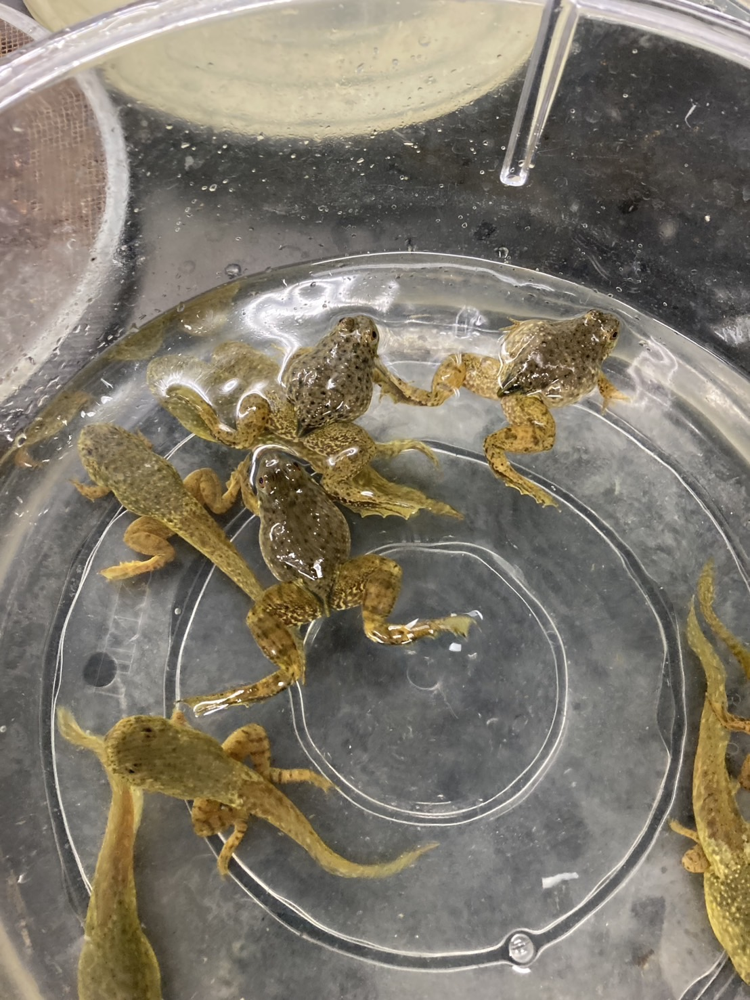

ウシガエルについて

ウシガエル（牛蛙、Lithobates catesbeianus）は、無尾目アカガエル科アメリカアカガエル属に分類される北アメリカ原産のカエル。特定外来生物に指定されており、その食欲旺盛さから日本の生態系に大きな悪影響を及ぼしている。
実験
煮干しにして出汁を取りその出汁を使ってラーメンを作れば資源化できるのではないかと考え、実験を行うことに
実験方法
- 水槽を用いて数日間泥抜き
- ウシガエルを氷で締めて包丁を用いて脊髄を断つ
- オタマジャクシは尻尾を、足が生えたものは足も切断
- 切断したものを塩、酢を用いて臭み消し
- 臭み消ししたものを食塩水に入れ五分間沸騰させる
- 丸一日天日干しまたは室内で扇風機の風に当て続ける
- 煮干しの完成！！
- 沸騰させたお湯で出汁を取る
結果
- ウシガエルの煮干しから出汁を取ることに成功 ⇒本物の煮干しに近い風味を感じた ⇒胴体部を使用していないため、臭みはなかった
- 昆布出汁との比較 ⇒ウシガエル出汁のほうが美味しかった ⇒出汁として使えなくはないと考えられる
- 昆布出汁と混ぜる ⇒煮干し：昆布＝１：１は微妙 ⇒煮干し：昆布=3：1が相性良し
- スープの味 出汁としては成功、ウシガエルラーメンは失敗
考察
ウシガエルから出汁を取ることはできたことから、うまみ成分の抽出に成功したと考えられる。また、短期間で80匹取れたので動物性タンパク質としては十分であるとも考えられる。